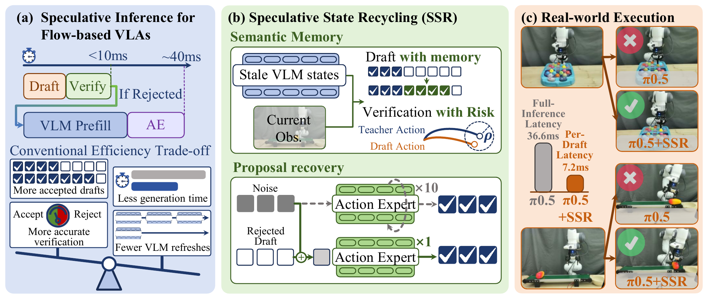
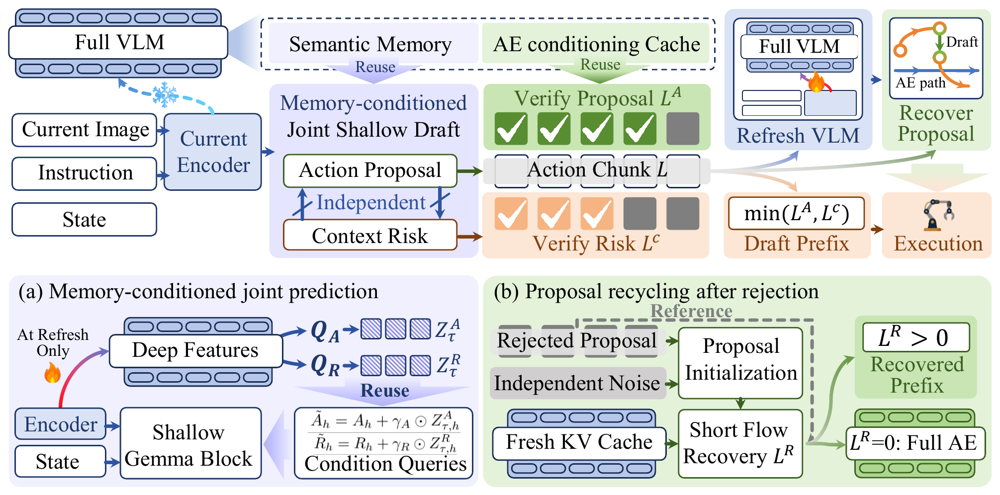

Output–cost analysis
Measure speculative efficiency by executable action yield versus complete inference cost; discarded intermediate states are wasted compute.

Measure speculative efficiency by executable action yield versus complete inference cost; discarded intermediate states are wasted compute.
Recycle retained semantic states for lightweight prediction and context-dependent refresh, and rejected proposals for short fresh-conditioned generation.
LIBERO: nearly matches compiled π0.5 at 1.89× per-action speedup. LIBERO-Plus: +5.77 vs FLASH at +0.15 ms/action. Real Panda: better conveyor, whack-a-mole, and timed pick-and-place.
Speculative inference accelerates flow-based vision-language-action models (Flow-VLAs) by bypassing vision-language model (VLM) prefill and full flow integration on speculative rounds. However, lightweight drafting and approximate verification can compromise action quality, while additional computation to improve reliability can erode the resulting speedup. Moreover, rejection can erase these savings by triggering full-path inference after the draft and verification costs have already been incurred. These limitations point to a broader inefficiency: speculative states are often discarded once they are no longer directly usable, even though they may still contain useful predictive information. We propose Speculative State Recycling (SSR), which improves this quality–efficiency trade-off by recycling previously computed states across changes in conditioning. Before refresh, retained deep VLM features serve as semantic memory for a shallow predictor, augmenting the current observation with prior high-level representations. The same shallow computation also produces a draft-independent Context Risk estimate of how much refreshing the conditioning would change the full model’s actions, guiding execution and refresh. When refresh is needed, saved proposals initialize short fresh-conditioned Action Expert integration, reducing regeneration from noise. On LIBERO, SSR with Triton nearly matches the success rate of full-generation π0.5 with compiled inference while achieving a 1.89× speedup per executed action and 74.1% fewer full AE calls per executed action. On LIBERO-Plus, SSR improves mean success by 5.77 points over FLASH at only 0.15 ms/action additional cost.

Retained deep features condition a shallow joint drafter, so later rounds skip another full prefill.
The same shallow pass estimates how much a refresh would change the teacher actions, and triggers refresh when needed.
After refresh, the rejected proposal initializes short fresh-conditioned Action Expert integration instead of noise.
Pick and place the mango, corn, sponge, and brush within 30 seconds.
π0.5 · fail (44s)
SSR · success (27s)
Low / mid / high belt speeds. π0.5 succeeds only at low speed; SSR succeeds at all three.
π0.5 · success
SSR · success
π0.5 · fail
SSR · success
π0.5 · fail
SSR · success
Low / high game speeds. Scores are the hit counts shown on the board.
π0.5 · score 4
SSR · score 11
π0.5 · score 2
SSR · score 6
@article{anonymous2027ssr,
title={Making Computation Count: Speculative State Recycling for Flow-Based VLAs},
author={Anonymous},
journal={OpenReview preprint},
year={2027}
}